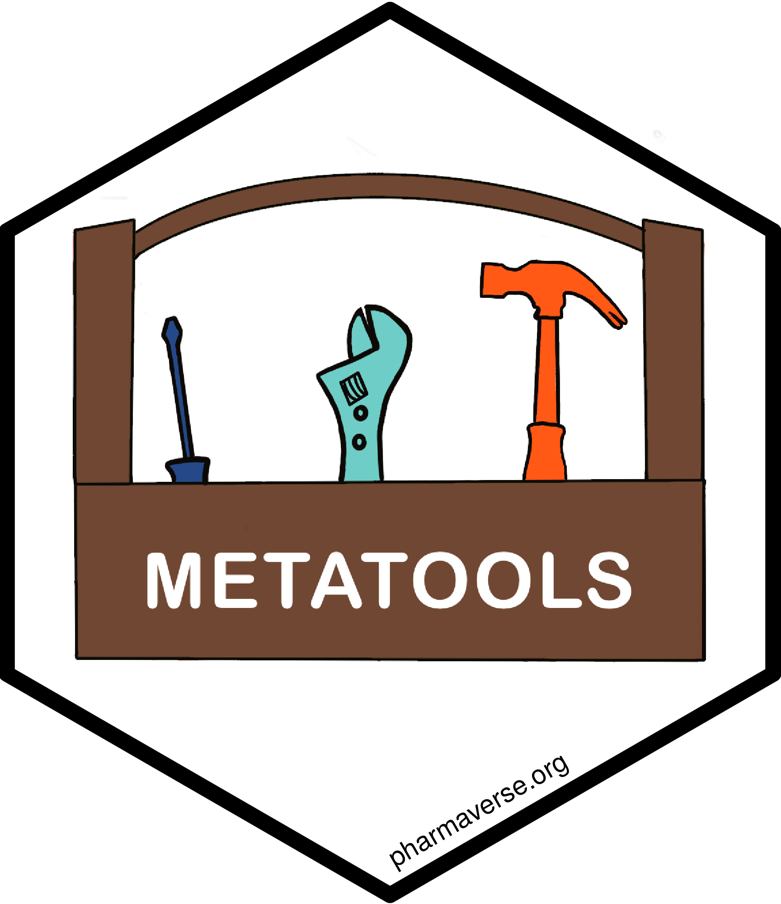

metatools 
The goal of metatools is to enable the use of metacore objects. Metatools can be used to build datasets or enhance columns in existing datasets as well as checking datasets against the metadata in metacore.
Installation
You can install the released version of metatools from GitHub with:
install.packages("metatools")And the development version from GitHub with:
# install.packages("devtools")
devtools::install_github("pharmaverse/metatools")Example
Here is a basic example of some functions to build datasets and create new columns.
library(metatools)
library(metacore)
library(haven)
library(dplyr)
#>
#> Attaching package: 'dplyr'
#> The following objects are masked from 'package:stats':
#>
#> filter, lag
#> The following objects are masked from 'package:base':
#>
#> intersect, setdiff, setequal, union
load(metacore_example("pilot_ADaM.rda"))
metacore <- metacore %>%
select_dataset("ADSL")
ds_list <- list(DM = read_xpt(metatools_example("dm.xpt")))
# Pull in columns from DM to be in ADSL
adsl <- build_from_derived(metacore, ds_list, predecessor_only = FALSE)
adsl
#> # A tibble: 306 × 13
#> STUDYID USUBJID SUBJID SITEID TRT01P AGE AGEU RACE SEX ETHNIC DTHFL
#> <chr> <chr> <chr> <chr> <chr> <dbl> <chr> <chr> <chr> <chr> <chr>
#> 1 CDISCPILOT… 01-701… 1015 701 Place… 63 YEARS WHITE F HISPA… ""
#> 2 CDISCPILOT… 01-701… 1023 701 Place… 64 YEARS WHITE M HISPA… ""
#> 3 CDISCPILOT… 01-701… 1028 701 Xanom… 71 YEARS WHITE M NOT H… ""
#> 4 CDISCPILOT… 01-701… 1033 701 Xanom… 74 YEARS WHITE M NOT H… ""
#> 5 CDISCPILOT… 01-701… 1034 701 Xanom… 77 YEARS WHITE F NOT H… ""
#> 6 CDISCPILOT… 01-701… 1047 701 Place… 85 YEARS WHITE F NOT H… ""
#> 7 CDISCPILOT… 01-701… 1057 701 Scree… 59 YEARS WHITE F HISPA… ""
#> 8 CDISCPILOT… 01-701… 1097 701 Xanom… 68 YEARS WHITE M NOT H… ""
#> 9 CDISCPILOT… 01-701… 1111 701 Xanom… 81 YEARS WHITE F NOT H… ""
#> 10 CDISCPILOT… 01-701… 1115 701 Xanom… 84 YEARS WHITE M NOT H… ""
#> # … with 296 more rows, and 2 more variables: RFSTDTC <chr>, RFENDTC <chr>
# Now we can make some new columns and converting columns into factors
adsl %>%
select(USUBJID, AGE, ETHNIC) %>%
create_cat_var(metacore, AGE, AGEGR1, AGEGR1N) %>% #Add an AGEGR1 and AGEGR1N column
convert_var_to_fct(metacore, ETHNIC) # Change ETHNIC to as factor
#> # A tibble: 306 × 5
#> USUBJID AGE ETHNIC AGEGR1 AGEGR1N
#> <chr> <dbl> <fct> <chr> <dbl>
#> 1 01-701-1015 63 HISPANIC OR LATINO <65 1
#> 2 01-701-1023 64 HISPANIC OR LATINO <65 1
#> 3 01-701-1028 71 NOT HISPANIC OR LATINO 65-80 2
#> 4 01-701-1033 74 NOT HISPANIC OR LATINO 65-80 2
#> 5 01-701-1034 77 NOT HISPANIC OR LATINO 65-80 2
#> 6 01-701-1047 85 NOT HISPANIC OR LATINO >80 3
#> 7 01-701-1057 59 HISPANIC OR LATINO <65 1
#> 8 01-701-1097 68 NOT HISPANIC OR LATINO 65-80 2
#> 9 01-701-1111 81 NOT HISPANIC OR LATINO >80 3
#> 10 01-701-1115 84 NOT HISPANIC OR LATINO >80 3
#> # … with 296 more rowsMetatools can also be used to run checks
data <- read_xpt(metatools_example("adsl.xpt"))
# Checks can be run on a single column
check_ct_col(data, metacore, TRT01PN) # Checks column only contains control terminology
#> # A tibble: 254 × 49
#> STUDYID USUBJID SUBJID SITEID SITEGR1 ARM TRT01P TRT01PN TRT01A TRT01AN
#> <chr> <chr> <chr> <chr> <chr> <chr> <chr> <dbl> <chr> <dbl>
#> 1 CDISCPILOT… 01-701… 1015 701 701 Plac… Place… 0 Place… 0
#> 2 CDISCPILOT… 01-701… 1023 701 701 Plac… Place… 0 Place… 0
#> 3 CDISCPILOT… 01-701… 1028 701 701 Xano… Xanom… 81 Xanom… 81
#> 4 CDISCPILOT… 01-701… 1033 701 701 Xano… Xanom… 54 Xanom… 54
#> 5 CDISCPILOT… 01-701… 1034 701 701 Xano… Xanom… 81 Xanom… 81
#> 6 CDISCPILOT… 01-701… 1047 701 701 Plac… Place… 0 Place… 0
#> 7 CDISCPILOT… 01-701… 1097 701 701 Xano… Xanom… 54 Xanom… 54
#> 8 CDISCPILOT… 01-701… 1111 701 701 Xano… Xanom… 54 Xanom… 54
#> 9 CDISCPILOT… 01-701… 1115 701 701 Xano… Xanom… 54 Xanom… 54
#> 10 CDISCPILOT… 01-701… 1118 701 701 Plac… Place… 0 Place… 0
#> # … with 244 more rows, and 39 more variables: TRTSDT <date>, TRTEDT <date>,
#> # TRTDURD <dbl>, AVGDD <dbl>, CUMDOSE <dbl>, AGE <dbl>, AGEGR1 <chr>,
#> # AGEGR1N <dbl>, AGEU <chr>, RACE <chr>, RACEN <dbl>, SEX <chr>,
#> # ETHNIC <chr>, SAFFL <chr>, ITTFL <chr>, EFFFL <chr>, COMP8FL <chr>,
#> # COMP16FL <chr>, COMP24FL <chr>, DISCONFL <chr>, DSRAEFL <chr>, DTHFL <chr>,
#> # BMIBL <dbl>, BMIBLGR1 <chr>, HEIGHTBL <dbl>, WEIGHTBL <dbl>, EDUCLVL <dbl>,
#> # DISONSDT <date>, DURDIS <dbl>, DURDSGR1 <chr>, VISIT1DT <date>, …
# Or across all the columns
check_ct_data(data, metacore) %>% # Checks control terminology for all columns
check_variables(metacore) # Check all variables in the metadata are in the dataset and there aren't any extra columns
#> No missing or extra variables
#> # A tibble: 254 × 49
#> STUDYID USUBJID SUBJID SITEID SITEGR1 ARM TRT01P TRT01PN TRT01A TRT01AN
#> <chr> <chr> <chr> <chr> <chr> <chr> <chr> <dbl> <chr> <dbl>
#> 1 CDISCPILOT… 01-701… 1015 701 701 Plac… Place… 0 Place… 0
#> 2 CDISCPILOT… 01-701… 1023 701 701 Plac… Place… 0 Place… 0
#> 3 CDISCPILOT… 01-701… 1028 701 701 Xano… Xanom… 81 Xanom… 81
#> 4 CDISCPILOT… 01-701… 1033 701 701 Xano… Xanom… 54 Xanom… 54
#> 5 CDISCPILOT… 01-701… 1034 701 701 Xano… Xanom… 81 Xanom… 81
#> 6 CDISCPILOT… 01-701… 1047 701 701 Plac… Place… 0 Place… 0
#> 7 CDISCPILOT… 01-701… 1097 701 701 Xano… Xanom… 54 Xanom… 54
#> 8 CDISCPILOT… 01-701… 1111 701 701 Xano… Xanom… 54 Xanom… 54
#> 9 CDISCPILOT… 01-701… 1115 701 701 Xano… Xanom… 54 Xanom… 54
#> 10 CDISCPILOT… 01-701… 1118 701 701 Plac… Place… 0 Place… 0
#> # … with 244 more rows, and 39 more variables: TRTSDT <date>, TRTEDT <date>,
#> # TRTDURD <dbl>, AVGDD <dbl>, CUMDOSE <dbl>, AGE <dbl>, AGEGR1 <chr>,
#> # AGEGR1N <dbl>, AGEU <chr>, RACE <chr>, RACEN <dbl>, SEX <chr>,
#> # ETHNIC <chr>, SAFFL <chr>, ITTFL <chr>, EFFFL <chr>, COMP8FL <chr>,
#> # COMP16FL <chr>, COMP24FL <chr>, DISCONFL <chr>, DSRAEFL <chr>, DTHFL <chr>,
#> # BMIBL <dbl>, BMIBLGR1 <chr>, HEIGHTBL <dbl>, WEIGHTBL <dbl>, EDUCLVL <dbl>,
#> # DISONSDT <date>, DURDIS <dbl>, DURDSGR1 <chr>, VISIT1DT <date>, …